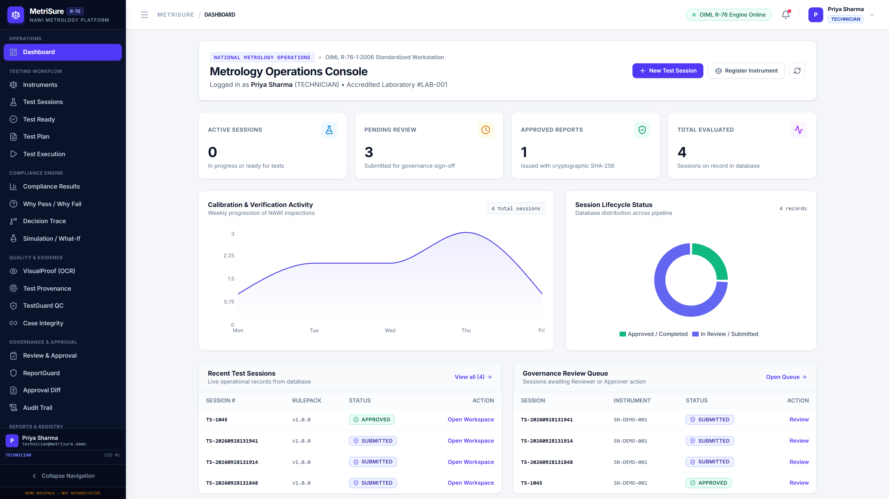
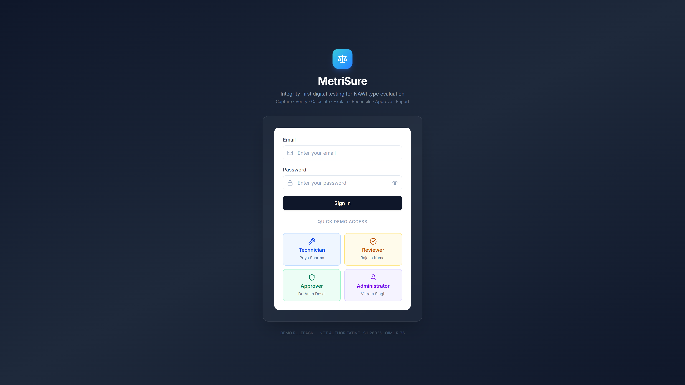
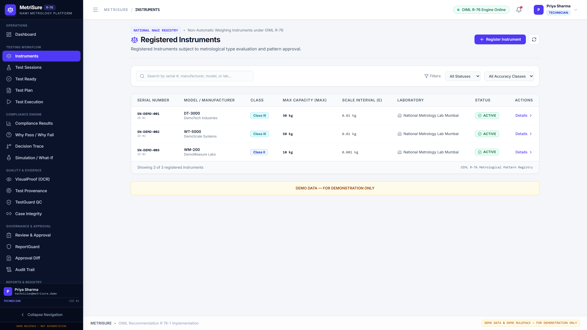
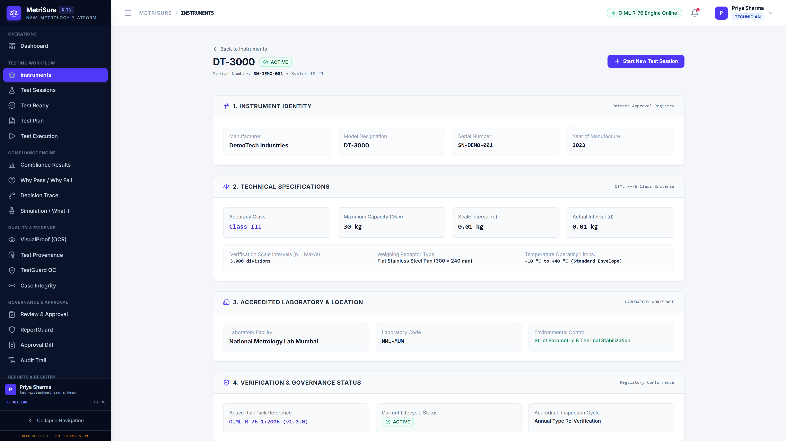
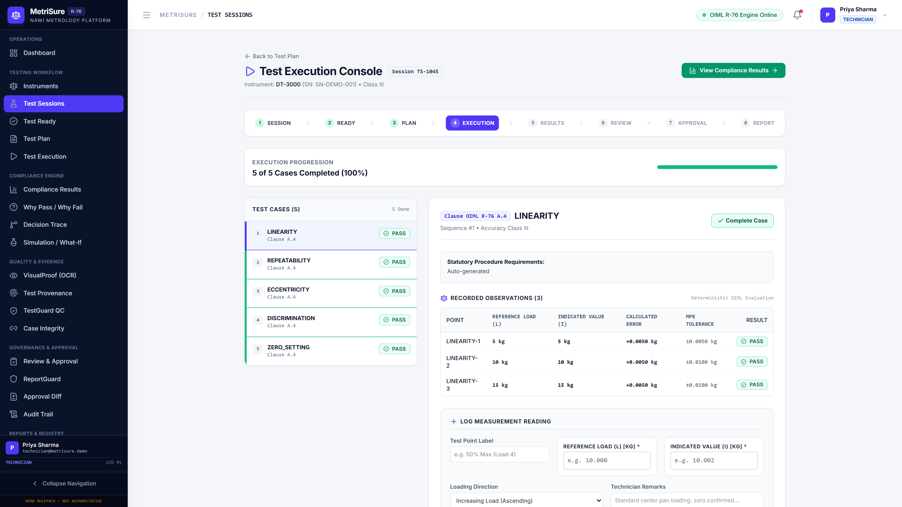
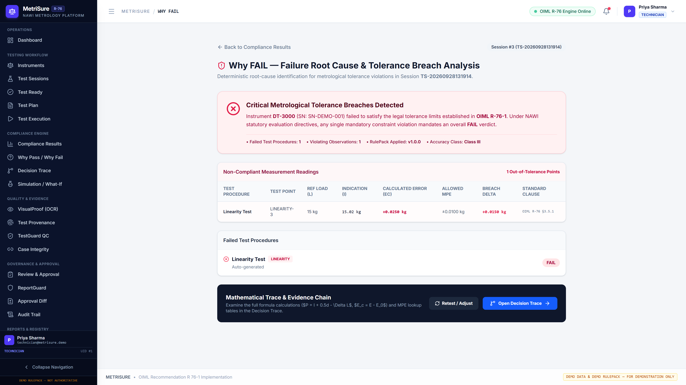
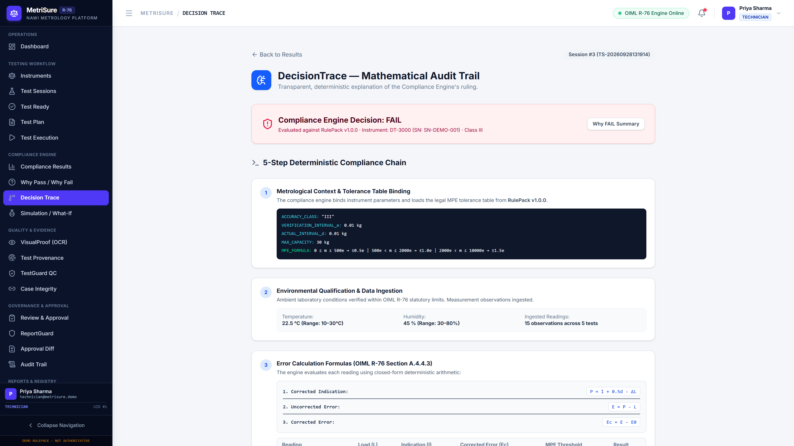
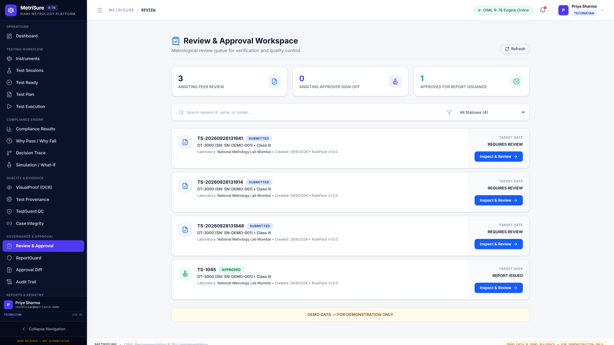
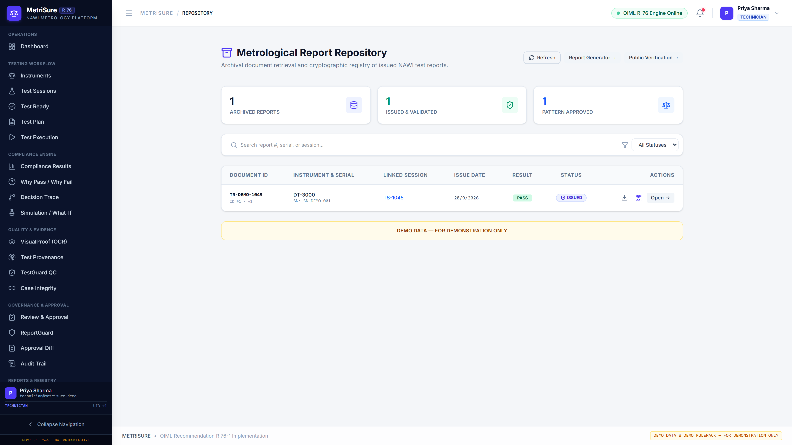
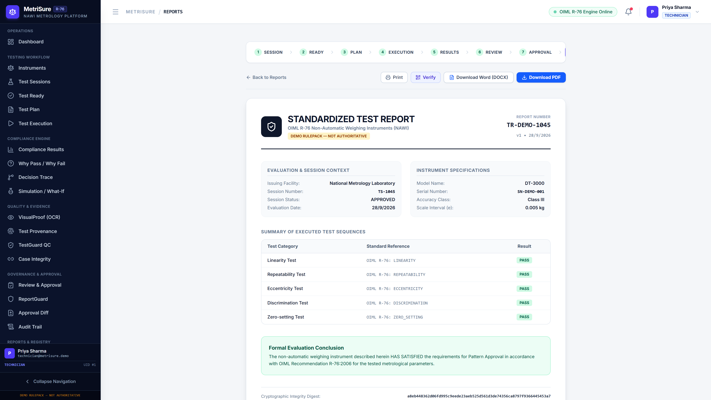

SIH 2026 Finalist
Problem Statement: SIH26035
OIML Recommendation R-76
Zero-AI Statutory Decision Path
METRISURE
Digital Test Report Generation System for Non-Automatic Weighing Instruments (NAWI)
Problem Statement Alignment
Ministry of Consumer Affairs, Food & Public Distribution
Department of Consumer Affairs — Legal Metrology Division
An enterprise-grade, deterministic digital platform engineered to eliminate manual paper and spreadsheet errors in legal metrology testing, dynamically enforce OIML R-76 Maximum Permissible Error (MPE) envelopes, and generate cryptographically verifiable Digital Test Reports.
Quick Verification Metadata
Standard: OIML R-76-1 (Edition 2006)
Classes Evaluated: Class I, II, III, IIII
Demo Reference: Class III DT-3000 (30 kg)
Engine Paradigm: Pure Deterministic Python Engine
Report Format: Sealed Digital PDF + SHA-256 Digest
The MetriSure responsive web interface operates seamlessly across high-resolution laboratory workstations, tablet inspection benches, and mobile devices without requiring third-party native installations.
⚖️
Deterministic MPE
Exact OIML R-76 mathematical formulas calculate step-by-step error bounds without human error.
🔍
DecisionTrace
Every pass or fail verdict provides clear mathematical proof and rule references for full transparency.
📸
Evidence Binding
Observations are cryptographically bound with raw measurements, timestamps, and optical images.
🛡️
4-Eye Governance
Segregation of duties across Technician, Reviewer, Approver, and Administrator roles.
Core Concept
Metrology Problem Solving
What is MetriSure?
Transforming manual, fragmented weighing instrument evaluations into structured, explainable, and tamper-resistant digital test reports.
❌ The Legacy Evaluation Problem
- Manual Data Transcription: Technicians record observations on paper workbooks or ad-hoc Excel sheets, leading to transcription and rounding errors.
- Complex MPE Lookups: Maximum Permissible Error rules vary by load range ($m \le 500e$, $500e < m \le 2000e$, etc.) and are prone to miscalculation.
- Zero Metrological Traceability: No tamper-evident cryptographic log binds who performed the test, under what conditions, and using which weights.
- Delayed Approvals: Reports take days to compile, review, and manually sign across separated departments.
✅ The MetriSure Solution
- Guided Digital Test Execution: Standardized multi-stage workflows guide the technician step-by-step through test points.
- Real-Time Dynamic MPE Calculation: The compliance engine automatically applies OIML R-76 Table 6 formulas instantly as values are keyed in.
- Immutable Audit History: Every observation, review note, and approval is sealed with cryptographic SHA-256 hashes.
- Instant Official Digital Reports: Generates tamper-evident PDF reports containing complete decision traces and QR verification links.
1. Testing Officers / Techs
Executes physical procedures, enters test observations, and uploads display photos.
2. Quality Reviewers
Examines compliance calculations, checks optical proof, and records independent audit notes.
3. Approving Authorities
Authorized laboratory signatories who perform final review and issue the Digital Test Report.
4. Laboratory Directors
Monitors laboratory throughput, facility readiness, and audits compliance adherence.
1. Instrument
→
2. Laboratory
→
3. Test Session
→
4. Observations
→
5. Compliance Engine
→
6. Review
→
7. Digital Test Report
End-to-End Trace
Process Lifecycle
Complete System Workflow
A step-by-step walkthrough of how an instrument traverses the MetriSure evaluation lifecycle from initial setup to sealed report issuance.
01
Authentication & Role-Based Access
Users authenticate with their secure credentials. The system provisions granular role-based permissions (Technician, Reviewer, Approver, or Administrator).
Route: /login ⬝ /dashboard
02
Instrument Registration & Metadata Enrollment
Register non-automatic weighing instrument parameters: manufacturer, model, serial number, accuracy class (I, II, III, IIII), maximum capacity ($Max$), minimum capacity ($Min$), verification interval ($e$), and actual scale interval ($d$).
Route: /instruments ⬝ /instruments/new ⬝ /instruments/:id
03
Laboratory Assignment & Environmental Conditioning
Assign the instrument to an authorized laboratory facility (e.g. National Metrology Lab Mumbai). Record initial ambient temperature, relative humidity, and barometric pressure.
Route: /laboratories ⬝ /test-ready/:id
04
Test Session Initialization & Plan Generation
Create a new test session bound to an active RulePack version (e.g. v1.0.0). The system automatically generates standardized test points for Linearity, Repeatability, Eccentricity, Discrimination, and Zero-Setting.
Route: /test-sessions/new ⬝ /test-plan/:id
05
Test Execution & Observation Entry
The testing technician keys in reference standard weights ($L$), indicated scale readings ($I$), fractional weight additions ($\Delta L$), and directional progression (increasing vs decreasing). Display photos can be captured and bound as evidence.
Route: /test-sessions/:id/tests ⬝ /test-execution/:id
06
Deterministic Compliance Calculation
The Python compliance engine executes deterministic calculations: corrected indication $P = I + 0.5d - \Delta L$, corrected error $E_c = P - L - E_0$, and compares $|E_c|$ against OIML R-76 MPE limits.
Route: /api/compliance/evaluate ⬝ /results/:id
07
Why PASS / Why FAIL & DecisionTrace
Full mathematical transparency: displays exact numerical evaluations, error bounds, tolerance margin percentages, and the formal regulatory clause governing the ruling.
Route: /why-pass/:id ⬝ /why-fail/:id ⬝ /decision-trace/:id
08
Independent Review Queue & Reviewer Inspection
Upon session submission by the technician, the session moves to the Review Queue. An authorized Reviewer examines all observation points, error calculations, and optical evidence, recording formal review notes.
Route: /review ⬝ /review/:id
09
Final Sign-off & Cryptographic Report Issuance
An authorized Approver inspects the reviewer's recommendation and issues final cryptographic approval. A sealed Digital Test Report PDF is generated with an immutable SHA-256 checksum.
Route: /approval/:id ⬝ /reports ⬝ /reports/:id
10
Public Verification & Immutable Audit Trail
Anyone in possession of the issued report can verify its authentic issuance and checksum via the public verification portal or embedded QR code. All actions are indelibly recorded in the cryptographic audit log.
Route: /verification/:id ⬝ /audit
Governance
Role Permissions
Dashboard & Role-Based Access Control (RBAC)
Ensuring strict segregation of duties between test execution, compliance review, certificate issuance, and administrative oversight.
Role 1
Technician
Priya Sharma
- Register instruments
- Initiate test sessions
- Log load observations
- Attach optical evidence
- Submit sessions for review
Role 2
Reviewer
Rajesh Kumar
- Inspect review queue
- Audit raw observations
- Verify optical proof
- Record audit notes
- Recommend approval / reject
Role 3
Approver
Dr. Anita Desai
- Authorized signatory access
- Inspect reviewer findings
- Execute final sign-off
- Issue Digital Test Reports
- Authorizes certificate hash
Role 4
Administrator
Vikram Singh
- User account management
- Laboratory facility config
- RulePack version deployment
- System-wide audit trail review
- Environment configuration

Figure 4.1: Production Dashboard displaying active sessions, evaluation metrics, recent activity, and quick navigation.
1
System Status Cards: Shows active evaluations, compliance pass rate, and pending review queue items.
2
Primary Navigation: Quick access to Instruments, Test Sessions, Compliance, Evidence, Governance, and Reports.
3
Active Test Sessions: Direct overview of pending test evaluations with status chips (SUBMITTED, APPROVED).
4
Current User Session: Active user identity, role designation badge, and quick role switching demo access.

Figure 4.2: Login portal featuring single-click role authentication for evaluation officers and SIH judges.
Setup & Metrological Parameters
DEMO DATA — FOR DEMONSTRATION ONLY
Instrument & Laboratory Setup
Configuring Non-Automatic Weighing Instruments (NAWI) parameters, accuracy classifications, and environmental gating conditions.
| Parameter |
Symbol / Field |
Production Value |
Metrological Significance |
| Manufacturer & Model |
model_name |
DemoTech Industries DT-3000 |
Identifies instrument family and type-approval lineage |
| Serial Number |
serial_number |
SN-DEMO-001 |
Unique physical device identification |
| Accuracy Class |
accuracy_class |
Class III (Medium Accuracy) |
Governs applicable OIML R-76 MPE error thresholds (Table 6) |
| Maximum Capacity |
$Max$ |
30.0 kg |
Upper limit of weighing capability without exceeding tolerances |
| Minimum Capacity |
$Min$ |
0.1 kg ($20\,e$) |
Lower bound below which weighing results are subject to excessive error |
| Verification Scale Interval |
$e$ |
0.01 kg (10 g) |
Statutory value used for error tolerance calculation |
| Actual Scale Interval |
$d$ |
0.01 kg (10 g) |
Scale division displayed on instrument display ($d = e$) |
| Number of Intervals |
$n = Max / e$ |
3,000 divisions |
Class III compliant range ($500 \le n \le 10,000$) |
| Laboratory Facility |
laboratory |
National Metrology Lab Mumbai (NML-MUM) |
Facility certified for environmental conditions and testing standard weights |

Figure 5.1: Instruments page with active Class III assets.

Figure 5.2: Metrological parameter inspection view.
🌡️ Environmental Condition Gating (TestReady Protocol)
Before any test session observations can be accepted by the system, ambient testing conditions must be verified within statutory operating limits:
• Temperature: 22.5 °C (Class III tolerance range: -10 °C to +40 °C)
• Relative Humidity: 45.0% (Non-condensing, statutory max: 85%)
• Atmospheric Pressure: 1013.25 hPa (Nominal sea-level atmospheric datum)
Execution Workflow
OIML R-76 Test Cases
Test Session & Test Execution
Standardized execution protocols covering all 5 core non-automatic weighing test categories defined in OIML Recommendation R-76.
1. Linearity Test
Evaluates weighing accuracy across the complete range ($0$ to $Max$) in ascending and descending load cycles. Verifies proportional response.
Points: 5 kg, 10 kg, 15 kg, 20 kg, 30 kg
2. Repeatability Test
Evaluates instrument indication consistency when the identical load is repeatedly deposited and removed under identical conditions.
Points: 3x Series at 10.0 kg
3. Eccentricity Test
Verifies load-receptor performance when test loads ($1/3\,Max$) are placed off-center at front-left, front-right, rear-left, rear-right, and center.
Points: 5 Quadrants at 10.0 kg
4. Discrimination Test
Tests the ability of the instrument to respond to small load increments ($\approx 1.4\,d$). Verifies mechanical / digital sensor sensitivity.
Points: Zero & Loaded Discrimination
5. Zero-Setting Test
Verifies initial zero-setting and zero-tracking devices maintain the zero indication within $\pm 0.25\,e$ of true zero datum.
Points: Initial Zero Setting Tolerance
Test Data Entry Cycle
Every observation record requires: Standard Load ($L$), Indicated Value ($I$), Fractional Addition ($\Delta L$), and direction.
Auto-Calculated: $P$, $E$, $E_c$, MPE

Figure 6.1: Active test execution workspace displaying real-time observation entry, error calculation, and MPE bounds.
| Session Identifier |
Type / Purpose |
Linearity |
Repeatability |
Eccentricity |
Discrimination |
Zero-Setting |
Final Ruling |
TS-1045
(Session ID: 1) |
Clean Compliant Evaluation Baseline |
PASS |
PASS |
PASS |
PASS |
PASS |
APPROVED |
TS-20260928131914
(Session ID: 3) |
Controlled Tolerance Breach Demo |
FAIL (Pt 3) |
PASS |
PASS |
PASS |
PASS |
SUBMITTED (FAIL) |
Core Engine Architecture
Zero-AI Decision Path
DEMO RULEPACK — NOT AUTHORITATIVE
Deterministic Compliance Engine
Pure mathematical determination of metrological compliance adhering strictly to OIML Recommendation R-76 without black-box machine learning.
INPUT
Validated Observations
$L$, $I$, $\Delta L$, $d$, $e$
➔
RULES
Versioned RulePack
OIML R-76 v1.0.0
➔
ENGINE
Deterministic Engine
Exact Arithmetic
➔
RULING
PASS / FAIL Verdict
Tolerance Bound Check
➔
EXPLAINABILITY
DecisionTrace Log
Full Mathematical Proof
Corrected Indication ($P$)
P = I + 0.5d - ΔL
Eliminates digital rounding quantization by measuring fractional weights ($\Delta L$) required to trigger the next digital step.
Raw Error ($E$)
E = I - L
The apparent difference between indicated scale reading ($I$) and reference standard test weight ($L$).
Corrected Error ($E_c$)
E_c = P - L - E_0
The true metrological error of indication after subtracting the initial zero-setting datum error ($E_0$).
| Load Range in Verification Scale Intervals ($m / e$) |
Standard Load Range (DT-3000, $e = 0.01$ kg) |
Maximum Permissible Error (Initial Verification) |
Calculated MPE (DT-3000) |
| $0 \le m \le 500\,e$ |
$0 \le m \le 5.0\text{ kg}$ |
± 0.5 e |
± 0.005 kg (± 5 g) |
| $500\,e < m \le 2,000\,e$ |
$5.0\text{ kg} < m \le 20.0\text{ kg}$ |
± 1.0 e |
± 0.010 kg (± 10 g) |
| $2,000\,e < m \le 10,000\,e$ |
$20.0\text{ kg} < m \le 30.0\text{ kg}$ |
± 1.5 e |
± 0.015 kg (± 15 g) |
⚠️ Critical Metrological Safety Principle: Non-AI Statutory Decision Path
In strict compliance with statutory legal metrology mandates, MetriSure ensures that NO generative AI, machine learning neural network, or probabilistic model participates in the determination of statutory PASS / FAIL verdicts. All compliance decisions are 100% deterministic, reproducible, and verifiable via standardized arithmetic formulas.
Deterministic Failure Inspection
DEMO DATA — FOR DEMONSTRATION ONLY
Session: TS-20260928131914
Why FAIL & DecisionTrace
Transparent, explainable metrology in action: deep inspection of an actual controlled tolerance exceedance on the production backend.
Production Session: TS-20260928131914 (Session ID: 3)
Failed Test Case: Linearity Test (Test Case ID: 11)
Failed Observation: LINEARITY-3 (Observation ID: 33)
Reference Standard Load ($L$): 15.00 kg ($1,500\,e$)
Indicated Reading ($I$): 15.02 kg
Fractional Weight Added ($\Delta L$): 0.00 kg
Breach Calculation
Corrected Indication: $P = 15.025\text{ kg}$
Corrected Error: $E_c = \mathbf{+0.025\text{ kg}}\;(+2.5\,e)$
Permissible Limit (MPE): $\mathbf{\pm 0.010\text{ kg}}\;(\pm 1.0\,e)$
Tolerance Breach: $\mathbf{+0.015\text{ kg}}\;(+150\%)$
Verdict: FAIL (Rule: OIML R-76 §Table 6)

Figure 8.1: Live Why FAIL page displaying the exact root cause of the Linearity Point 3 exceedance.

Figure 8.2: Detailed DecisionTrace displaying the exact mathematical calculation chain and applicable rule clause.
| Test Parameter |
Compliant Baseline (TS-1045) |
Controlled Failure Demo (Session 3) |
Metrological Analysis |
| Standard Load ($L$) |
15.00 kg |
15.00 kg |
Identical nominal test point ($1,500\,e$) |
| Indicated Reading ($I$) |
15.00 kg |
15.02 kg |
+20 g positive deviation on Session 3 |
| Corrected Error ($E_c$) |
+0.010 kg ($+1.0\,e$) |
+0.025 kg ($+2.5\,e$) |
Session 3 error exceeds upper threshold |
| Applicable MPE Limit |
± 0.010 kg (± 1.0 e) |
± 0.010 kg (± 1.0 e) |
Class III Table 6 standard tolerance |
| Compliance Ruling |
PASS |
FAIL |
Deterministically derived via exact arithmetic |
Governance Lifecycle
Four-Eye Principle
Review, Approval & Report Generation
From completed test sessions to cryptographically sealed Digital Test Reports supporting legal metrology laboratories.
Phase 1: Test Complete
Technician finalizes session. System locks raw data against further modifications.
Phase 2: Review Workspace
Reviewer inspects observations, reviews optical display captures, and appends signed audit notes.
Phase 3: Final Approval
Authorized signatory executes final sign-off, confirming report issuance authorization.
Phase 4: Sealed Report
Immutable PDF test report generated with SHA-256 cryptographic digest and QR verification.

Figure 9.1: Review queue listing sessions submitted for independent scrutiny.

Figure 9.2: Issued report repository with SHA-256 digests.

Figure 9.3: Report inspection view with sealed PDF download.
ℹ️ MetriSure Scope & Boundary Clarity
MetriSure automates and generates Digital Test Reports supporting metrology laboratories and testing officers during instrument evaluation. MetriSure does NOT grant statutory legal model approval, initial verification certificates, or stamping without the formal intervention and authoritative decree of the designated State Legal Metrology Controller.
System Topology
SIH 2026 Evaluation Hub
End-to-End Demo & Deployed Architecture
Complete production architecture, live demonstration flows, and instant access links for SIH 2026 evaluators.
✅ PASS FLOW — Session TS-1045
1. Instrument: DT-3000 (Class III, 30 kg, $e = 0.01$ kg)
2. Test Cases: 5 of 5 PASS (Linearity, Repeatability, Eccentricity, Discrimination, Zero-Setting)
3. Compliance: Pure deterministic calculation within MPE bounds
4. Review & Approval: Approved by Dr. Anita Desai (Approver)
5. Report Issued: TR-DEMO-1045 (PDF Generated)
6. SHA-256 Digest: a8eb448362d06fd995c9eede23aeb525...
❌ FAIL FLOW — Session TS-20260928131914
1. Instrument: DT-3000 (Class III, 30 kg, $e = 0.01$ kg)
2. Test Cases: 4 PASS, 1 FAIL (Linearity Point 3 at 15.0 kg)
3. Compliance: Calculated Error $E_c = +0.025$ kg > MPE $0.010$ kg
4. Explainability: Why FAIL view isolates root cause ($+150\%$ breach)
5. DecisionTrace: Step-by-step arithmetic proof logged for audit
6. Status: SUBMITTED (Flagged for Review / Retest)
Client Tier
Vercel Edge Network
React 18, TypeScript, Vite, Tailwind CSS v4, Lucide Icons
➔
Backend Tier
Railway Container Service
FastAPI, Python 3.12, Uvicorn, SQLAlchemy, Pydantic
➔
Persistence Tier
SQLite Storage Engine
Relational schema, SHA-256 evidence hashing, ReportLab PDF